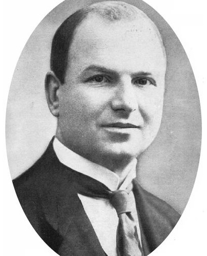
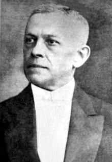
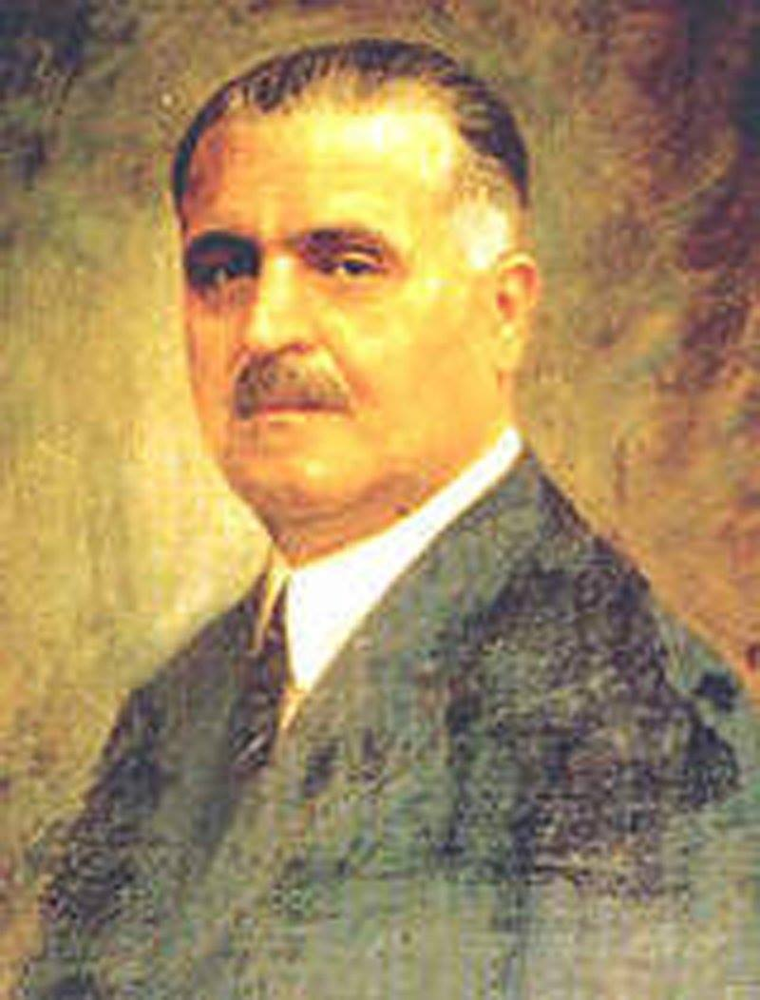

Ion Inculeț (1884-1940)
Președintele Sfatului Țării din Basarabia

Iancu Flondor (1865-1924)
A prezidat Congresul General care a votat unirea Bucovinei
cu România

Vasile Goldiș (1862-1934)
Unul dintre conducătorii Partidului Național Român din Transilvania.
A prezentat în fața Marii Adunări Naționale de la Alba Iulia Rezoluția Unirii.